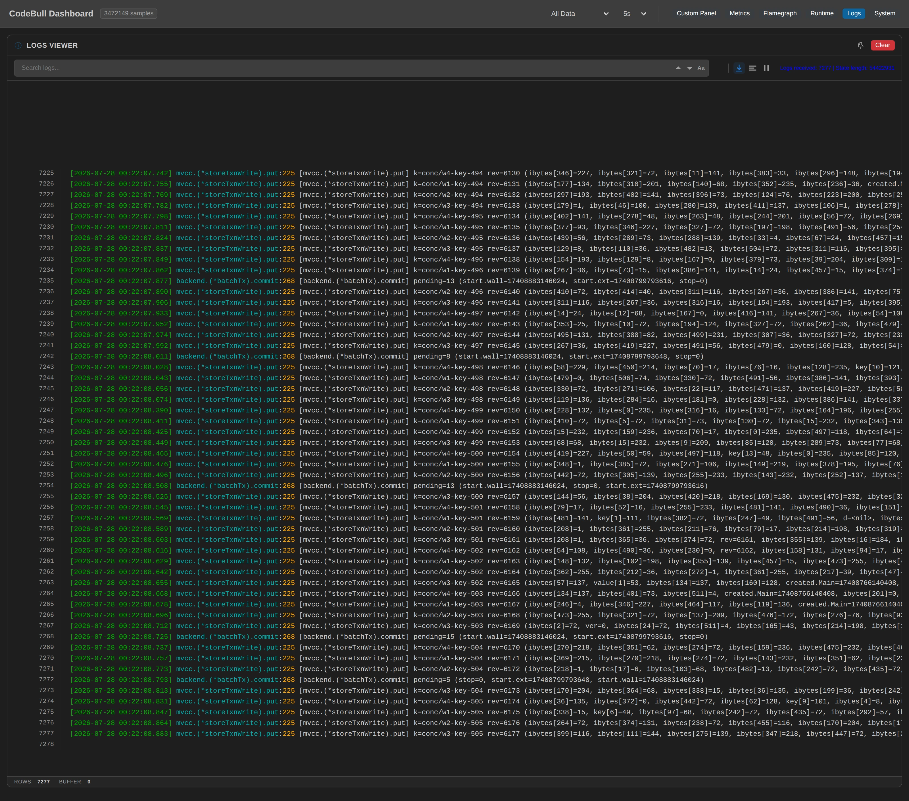
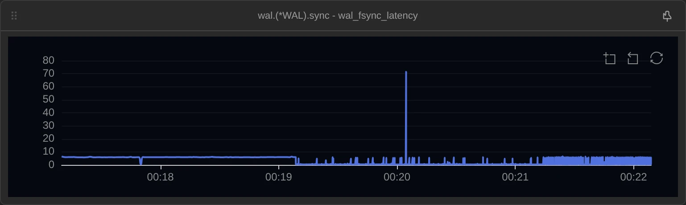
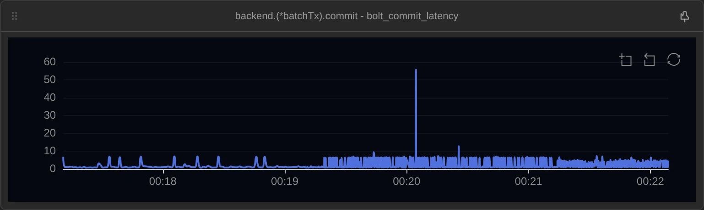
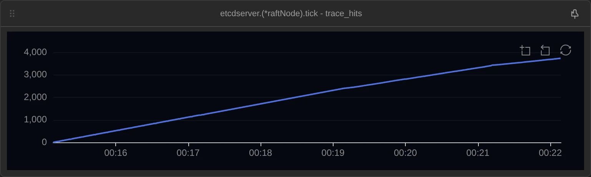
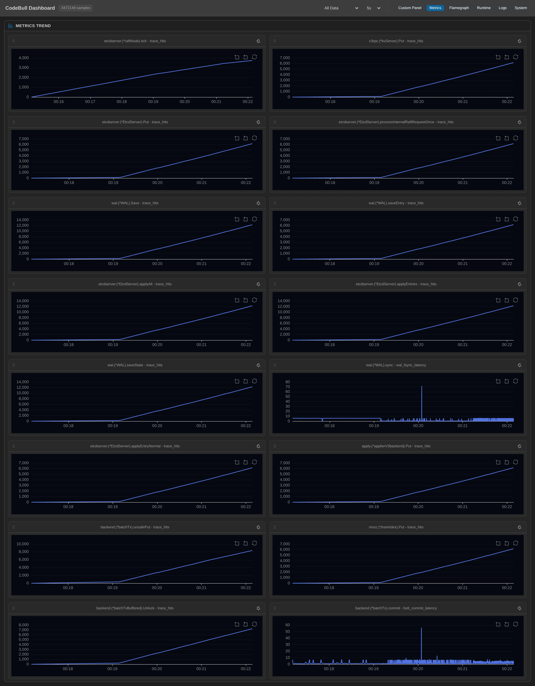

Not a few representative gates with the rest left to inference — every checkpoint on that path I could name, twenty positions, all at once. No recompile, no restart.
What I meant to look at was "how many things does one write become on the inside". What actually made me sit up had nothing to do with counts: the same fdatasync takes 5.9 ms when I write one key per second, and 0.4 ms when I hammer it flat out. Quieter is slower. This piece isn't about a tool — it's about what watching a running system gets you.
First decide where to stand
etcd's black-box quality is a particular one. It isn't "what SQL does my line become", it's "how many mechanisms, each with its own rhythm, have to take a turn on my key before it counts as written". gRPC accepts it, it becomes a raft proposal, it goes into the WAL, it gets fsynced, it waits for commit, it's applied to the state machine, it lands in MVCC, the in-memory index updates, it joins a bbolt transaction buffer — and at some later moment the whole batch is flushed.
From the outside, all you see is OK.
The usual approach is to pick a few representative gates and join the rest with guesswork. This time I wanted to try not guessing — put a point at the entrance of every layer and let the ratios speak. Here is how the twenty positions went:
| Layer | Convergence point | Location | Kind |
|---|---|---|---|
| gRPC ingress | v3rpc.(*kvServer).Put | api/v3rpc/key.go:91 | metric |
| Server API | etcdserver.(*EtcdServer).Put | v3_server.go:296 | metric |
| Raft proposal | processInternalRaftRequestOnce | v3_server.go:1059 | metric |
| Raft heartbeat | etcdserver.(*raftNode).tick | raft.go:160 | metric |
| WAL write round | wal.(*WAL).Save | wal.go:973 | metric |
| WAL entry append | wal.(*WAL).saveEntry | wal.go:939 | metric |
| WAL hard state | wal.(*WAL).saveState | wal.go:949 | metric |
| The fsync itself | wal.(*WAL).sync | wal.go:843 → 846 | latency |
| Raft Ready round | applyAll | server.go:973 | metric |
| Apply batch | applyEntries | server.go:1186 | metric |
| Apply one entry | applyEntryNormal | server.go:1946 | metric |
| Applier | apply.(*applierV3backend).Put | apply/backend.go:51 | metric |
| MVCC write | mvcc.(*storeTxnWrite).put | kvstore_txn.go:225 | log k={string(key)} rev={rev} |
| In-memory index | mvcc.(*treeIndex).Put | index.go:55 | metric |
| bbolt single put | backend.(*batchTx).unsafePut | batch_tx.go:150 | metric |
| Transaction unlock | backend.(*batchTxBuffered).Unlock | batch_tx.go:309 | metric |
| Flush batch size | backend.(*batchTx).commit | batch_tx.go:268 | log pending={t.pending} |
| Flush duration | backend.(*batchTx).commit | batch_tx.go:271 → 278 | latency |
| 100 ms batch timer | backend.(*backend).run | backend.go:455 | metric |
| Read path | etcdserver.(*EtcdServer).Range | v3_server.go:107 | metric |
Three of these need saying up front, because they are the spine of this piece.
On the flush point I didn't just put a counter. "How many flushes happened in this stretch" doesn't actually tell you much — the real question is how much work each individual flush carried. commit() happens to keep exactly that in t.pending, the counter it uses to decide whether to flush at all, so I pulled it straight out as a log template. Every flush now records, on the panel, how much it carried.
The two latency lines produced no samples at first. Registration reported success, the state showed as instrumented, hitCount was ticking up — and the latency table was completely empty. Then I tried giving the registration a template alias (wal_fsync_latency); same line, same process, and the samples appeared — 8,380 of them by the end.
What I wrote at the time was "the same thing, attached slightly differently, going from can't-measure to can-measure". What I later found out is that I could measure it the whole time — I did not know what to ask for.
hitCount ticking means intervals were closing, which means samples were being produced all along. They were simply recorded under the default series name, latency_ms, and I was asking for a different name and getting back "no samples found". When the samples "appeared" after I added wal_fsync_latency, it was because that was the first time I asked using a name I had chosen and could remember. The alias did not produce the samples. It renamed them into something I could ask for.
The real defect was not in latency at all — it was in that one reply. "This name was never recorded" and "there is no data in this time range" were the same sentence. The two have opposite fixes, and nothing on screen told them apart. That has since been fixed: registration now reports which series the samples will land in, and asking for a name that does not exist says so and lists the names that do.
I am keeping this passage because every step of the original reasoning looked sound: I changed one parameter, numbers appeared, therefore it was that parameter. What was missing was a control.
And one point I attached that never fired once. The 100 ms backend batch timer. I'll come back to it in the honest section.
I deliberately made the nine minutes uneven — five phases: two minutes not touching it → two minutes at one write per second → two minutes with one client flat out → two minutes with four clients at once → one minute of reads only.
First two minutes: an etcd nobody is using
The window ran from 2026-07-27 16:15:08.635Z to 16:24:11.029Z — nine minutes and two seconds. For the first stretch I sent it nothing.
Of the twenty points, exactly one moved: raftNode.tick, 1,200 times. Over 120.03 seconds that is exactly ten per second, matching etcd's default 100 ms tick.
The other nineteen are zero. gRPC zero, proposal zero, WAL zero, fsync zero, MVCC zero, flush zero. I checked etcd's own /metrics: over the same stretch the deltas for etcd_disk_wal_fsync_duration_seconds_count and etcd_disk_backend_commit_duration_seconds_count are also 0.
An idle etcd isn't spinning the disk, it's just counting time. I "knew" that, but I had never watched the whole path go quiet at once — nineteen points pinned to zero, with only the heartbeat moving.
Middle two minutes: one put leaves twenty-three footprints across sixteen positions
For the second stretch I sent one etcdctl put per second, 114 of them. This is the only phase where nothing batches yet, so it shows a single put with its makeup off:
| What I typed | What actually ran | Hits over 114 writes | Per write |
|---|---|---|---|
etcdctl put steady/key-0 v0 | kvServer.Put — gRPC accepts it | 114 | 1 |
| 〃 | EtcdServer.Put — into the server API | 114 | 1 |
| 〃 | processInternalRaftRequestOnce — files a raft proposal | 114 | 1 |
| 〃 | WAL.Save — WAL write round | 228 | 2 |
| 〃 | WAL.saveEntry — appends one entry | 114 | 1 |
| 〃 | WAL.saveState — appends hard state | 228 | 2 |
| 〃 | WAL.sync — the actual fdatasync | 114 | 1 |
| 〃 | applyAll — raft Ready round | 228 | 2 |
| 〃 | applyEntries — apply batch | 228 | 2 |
| 〃 | applyEntryNormal — applies one entry | 114 | 1 |
| 〃 | applierV3backend.Put | 114 | 1 |
| 〃 | mvcc.(*storeTxnWrite).put — writes into MVCC | 114 | 1 |
| 〃 | treeIndex.Put — updates the in-memory index | 114 | 1 |
| 〃 | batchTx.unsafePut — writes into the bbolt transaction | 342 | 3 |
| 〃 | batchTxBuffered.Unlock | 228 | 2 |
| 〃 | batchTx.commit — flushes the bbolt transaction | 114 | 1 |
| (I typed nothing) | raftNode.tick | 1,191 | — |
Add up the "per write" column: 1+1+1+2+1+2+1+2+2+1+1+1+1+3+2+1 = 23. Multiply back, 114 × 23 = 2,622, which matches the total hits those sixteen points recorded over those two minutes to the digit.
One etcdctl put leaves twenty-three footprints across the sixteen positions I instrumented.
Three of those twos and that three are things I thought I knew and had never watched:
WAL.Saveruns twice,saveEntryonly once. One write is two rounds at the WAL: one appends the entry, the other only advances the hard state (the commit index). The second round carries no entries, soMustSyncdecides no fsync is needed —WAL.Save228 times,WAL.synconly 114. Write rounds and disk syncs are not the same thing.applyAllalso runs twice. Raft's Ready loop turns twice for the same write (once to append, once to apply after commit), but only one entry is ever actually applied.unsafePutruns three times. At the bbolt layer one write is three key/value writes: yours into the key bucket, plus two of etcd's own metadata (the consistent index and friends).
The MVCC point rendered this, verbatim:
k=steady/key-0 rev=2
k=steady/key-113 rev=115The revision climbs one per write. That rev ends up being the ruler I check this entire article with.
A side comparison: with reads only, how many of the twenty move?
For the last minute I sent only etcdctl get — 5,276 of them in 61.9 seconds. How many of the twenty points moved?
Three. Range 5,276 times, and applyAll and applyEntries 5,380 each.
Everything else is zero — no proposals, no WAL entries, no fsyncs, no MVCC writes, no bbolt flushes. (The panel does still show 116 rows prefixed conc/ in this phase; reading the keys verbatim tells you those are the tail of the previous phase spilling over, not something this one produced.)
The interesting number is that 5,380: a linearizable read still costs one turn of raft's Ready loop. It writes nothing, but it isn't free.
Then I pushed the load up, to see which columns break away
Third stretch: one client flat out, 4,038 writes in two minutes (about 33.8/s). Fourth: four clients at once, 4,238 writes in two minutes.
Same points, two ratios that matter:
| Phase | Client writes | WAL fsync | Writes per fsync | bbolt commit | Writes per flush |
|---|---|---|---|---|---|
| B one per second | 114 | 114 | 1.0 | 114 | 1.0 |
| C one client flat out | 4,038 | 4,038 | 1.0 | 780 | 5.18 |
| D four clients flat out | 4,238 | 4,227 | 1.003 | 436 | 9.72 |
Only the bbolt column broke away, and it kept getting further out. 1 : 1 → 5.18 : 1 → 9.72 : 1.
The WAL barely batches at all. Across the whole nine minutes, 8,390 writes and 8,379 fsyncs — 11 saved, 0.13%. And all 11 happened in the four-client phase.
Here I have to be honest: phase four existed specifically to catch WAL batching, and it almost didn't happen. My reasoning was "with several clients sending at once, raft will pack multiple entries into one Ready round, so several writes share one fsync". The mechanism is real, and the panel even holds its afterimage: WAL.saveEntry ran 8,390 times, one per client write; but WAL.Save ran 16,739 times rather than the 16,780 that "two rounds per write" predicts — 41 rounds short. A few Save rounds really did carry more than one entry. It happened, it just barely happened. (The 41 missing Save rounds and the 11 saved fsyncs don't divide into a clean ratio, so there is something in there I haven't seen clearly.) My four clients together only pushed 35 writes a second; no queue ever formed. Right direction, completely wrong magnitude — which is more worth writing than a prediction that worked.
So how much did each individual flush carry?
"9.72 to 1" is an average, and this is exactly where averages lie: it could be every flush carrying nine or ten, or it could be some carrying two and some carrying thirty. Those two mean completely different things to the storage layer, and they produce the identical average.
So what I captured at the flush point isn't a count, it's pending itself. 1,331 flushes across the window, one row each:
| Phase | Flushes | Operations carried (mean) | Min | Max |
|---|---|---|---|---|
| B one per second | 114 | 3.0 | 3 | 3 |
| C one client flat out | 759 | 7.18 | 3 | 8 |
| D four clients flat out | 444 | 11.5 | 3 | 16 |
(These counts are bbolt-level operations, not client writes — at one write per second it happens to be exactly 3 to 1, but that ratio shrinks under load too; see the honest section.)
At one write per second, all 114 flushes carried exactly 3, without a single exception. One write, three bbolt operations, one flush — one to one to one, clean to the point of boredom.
Under load the distribution spreads out: across the window the most common sizes are 7 (399 times) and 8 (319 times) — that's the one-client-flat-out shape — while the four-client stretch produces a second cluster at 13, 14 and 15 (83, 93 and 90 times), topping out at 16. Multiply each size by how often it occurred and sum: 11,054, which lines up with the 11,052 hits unsafePut recorded over the same window (the extra 2 belong to a flush from before the window opened).
On the Logs tab you don't even need a query to see it — the mvcc.put rows scroll past one per write, then a pending=13 appears, then a dozen more rows, then a pending=8:

k=… rev=… rows between two pending= lines and you have read the batch off the screen. Batching isn't a statistical concept — it stacks up one row at a time, exactly like this. Open the live dashboard →All still interesting but unsurprising. The two latency lines are where I sat up.
That fsync is fourteen times slower when idle than when busy
What I expected to see: an fdatasync on disk gets slower as load rises. That's close to a reflex.
The panel says the opposite:
| Phase | Client writes | fsync samples | p50 | p95 | p99 |
|---|---|---|---|---|---|
| B one per second | 114 | 114 | 5.901 ms | 6.045 ms | 6.292 ms |
| C one client flat out (33.8/s) | 4,038 | 3,930 | 0.405 ms | 0.506 ms | 0.983 ms |
| D four clients flat out (35.0/s) | 4,238 | 4,221 | 0.415 ms | 0.768 ms | 5.936 ms |
(Samples are bucketed by timestamp, so they differ slightly from each phase's write count at the boundaries; 8,380 samples across the whole window.)
5.901 → 0.405. The same fileutil.Fdatasync, fourteen times faster when busy.
And neither figure is an average smeared out of noise: the 114 samples at one write per second run from 5.901 at p50 to 6.292 at p99 — the whole group sits tight against 6 ms; the 3,930 flat-out samples run from 0.405 at p50 to 0.506 at p95 — the whole group sits tight against 0.4 ms. Two narrow distributions, landing in completely different places.
Drawn out, it is a flat line that suddenly drops:

Why? I don't know. All I can speak to is what I measured: same process, same WAL file, same line of fdatasync, and the only thing that changed is how often it gets called. Whether those 5.5 ms go into the device's write cache, the filesystem, or a CPU climbing back out of an idle state — you can't tell from inside the process, and I'm not going to invent a mechanism for the reader.
But it does mean something for how you read a p99: if you measure etcd's fsync latency during a quiet window and use that as your SLO baseline, you will badly overestimate what it costs you when the system is busy.
So is the flush that carried sixteen slower?
This is what actually decides whether batching pays — if carrying more costs more, batching has only moved the cost somewhere else. I have two lines to put together: the flush-by-flush pending=N rows, and the bolt_commit_latency samples from the same function, matched up by time:
| Operations that flush carried | Samples | Flush duration p50 |
|---|---|---|
| 3 | 134 | 1.030 ms |
| 7 | 399 | 0.938 ms |
| 8 | 319 | 0.906 ms |
| 13 | 83 | 0.991 ms |
| 14 | 93 | 1.023 ms |
| 15 | 90 | 1.002 ms |
| 16 | 15 | 0.985 ms |
Carrying 16 costs the same as carrying 3. Every median hovers around a millisecond; there is no trend of getting slower as the batch grows.
By phase it's the same conclusion: at one write per second each flush carries 3 and takes 0.991 ms at p50; with four clients each carries 11.5 and takes 1.230 ms. Nearly four times the work for 24% more time. Per operation that's 0.33 ms down to 0.107 ms — three times cheaper.

Honest part: what I got wrong, can't see, and can't call
The first numbers I produced were all wrong, and wrong in a very presentable way. Before the real window I ran a rehearsal. After 2,721 client writes, the panel's cumulative hit counts read 1,685 for the gRPC ingress, 1,332 for the server API and 1,131 for the raft proposal — below that run's own write count, each short by a different amount, with no warning of any kind. Digging in: the SDK ships a 1,000 events/s token bucket by default and silently drops the overflow. With twenty points on the write path, that ceiling is reached at roughly 44 client writes per second. After raising it I re-ran a controlled experiment (480 writes, 8-way concurrency) and every point matched etcd's own counters to the digit; the real window's 8,390 writes then matched on all seven cross-checks. I could have left this paragraph out, but "numbers that look reasonable and are wrong" is exactly the most dangerous failure mode an observability tool has, so I'd rather lay it open.
One point I attached never fired once. backend.(*backend).run, the 100 ms batch timer — registered, reported instrumented, and hitCount stayed at 0 for the full nine minutes. I moved it to a different line (:452 and :455 both tried); still 0. The other nineteen all produced numbers. That function is a goroutine loop entered once at process start that never returns; my guess is that dynamic instrumentation only takes hold at the moment a function is called, so a function nobody calls again never reaches the instrumented copy. That's my inference, not something I verified from the inside. Either way, the rhythm of that 100 ms timer is something this round did not see.
pending is not a count of client writes. It counts bbolt-level operations queued in that transaction. Converting back means dividing by 3 — and that 3 drifts under load: unsafePut ran 11,052 times across the window against 8,390 client writes, a ratio of 1.32 rather than 3, because the metadata writes batch themselves too. Everywhere I wrote "operations carried" above, I mean bbolt operations.
I can't tell who caused the dropped heartbeats. raftNode.tick runs at 10.0 per second when idle, falls to 5.54 with four clients flat out, and returns to 10.15 during the read phase. The direction is clear enough — raft's heartbeat shares a path with the loop that processes Ready, so it drops beats when busy. But twenty observation points cost something too, and I can't separate etcd's share from mine on the panel. So I treat it as a signal worth chasing, not a conclusion.

Phase attribution carries about 50 writes of slop. The panel's hit counters trail the server slightly, so at a phase boundary the tail of one lands in the next. Totals are exact (eight points all land on 8,390), and the MVCC log carries the key prefix, so every one of the 8,390 writes can be attributed to the right phase verbatim — but the per-phase counter deltas are approximate at the edges, and I haven't used them to support any ratio.
The live dashboard only holds the first seven minutes. The full window exceeds the panel's upload ceiling (it comes back Invalid string length), so I narrowed the upload to 16:15:08–16:22:09 — idle, one per second, one client flat out, and the first half of the four-client phase: 7 min 1 s, 126,515 entries. Every ratio and latency figure above is visible in that stretch, but the panel's ROWS: 7277 corresponds to that sub-window, not the 8,390 quoted throughout.
What you can see is what you can see; what you can't, you mark as unseen. You don't hand the reader something that only looks complete.
A comparison: why etcd's own metrics still aren't enough
The control group here is unusually strong, and half my confidence in this piece comes from it. Subtract the window's endpoints and all seven pairs line up:
| etcd's own counter | Delta | My observation point | Hits |
|---|---|---|---|
etcd_mvcc_put_total | 8,390 | mvcc.(*storeTxnWrite).put | 8,390 |
etcd_server_proposals_committed_total | 8,390 | processInternalRaftRequestOnce | 8,390 |
etcd_server_proposals_applied_total | 8,390 | applyEntryNormal | 8,390 |
grpc_server_handled_total{Put,OK} | 8,390 | v3rpc.(*kvServer).Put | 8,390 |
etcd_disk_wal_fsync_duration_seconds_count | 8,379 | wal.(*WAL).sync | 8,379 |
etcd_disk_backend_commit_duration_seconds_count | 1,331 | backend.(*batchTx).commit | 1,331 |
grpc_server_handled_total{Range,OK} | 5,276 | EtcdServer.Range | 5,276 |
At counting things, it is far more mature than my observation points. So what did the points add?
- It only exports what it decided to export. Of the twenty-three footprints in that table, only five have a corresponding Prometheus metric.
WAL.Savetwice whileWAL.syncruns once,unsafePutthree times,applyAlltwice — etcd exports none of these. I could count them only because I can put a counter on a line I choose. - It's aggregate, not a verbatim record.
etcd_mvcc_put_totaltells you how many writes happened, not which key got which revision.etcd_disk_backend_commit_duration_secondsgives you a histogram of flush durations, but never tells you how much that flush carried —pending=16exists in no metric anywhere, because nobody decided in advance to export it. - It doesn't reconcile for you — I used it to reconcile myself. The value of that table isn't "proving etcd is right", it's proving the panel's numbers can be trusted. That's what lets the fourteen-times figure stand up.
And let me use that ruler once. Across the window rev runs from 2 to 8,391, and 8,391 − 2 + 1 = 8,390 — matching the panel's 8,390 log rows and the 8,390 my client counted on its own. Three independent sources landing on the same number.

Wrapping up
I didn't change a line of code, didn't restart etcd, didn't stand up a trace backend first. I attached twenty observation points to a running process, pushed the load from "not touching it" to "four clients flat out", switched to reads only, and paid attention for nine minutes.
What that bought: an idle etcd ticking 1,200 times in two minutes with the other nineteen points at zero; one put leaving twenty-three footprints across sixteen positions, with WAL.Save running twice but fsyncing once and bbolt writing three times; reads moving only three of the twenty points while still costing raft a full Ready round; only the bbolt column breaking away under load, from 1 : 1 out to 9.72 : 1, while the WAL saved a grand total of 11 fsyncs in nine minutes; every flush's exact size — always 3 at one write per second, up to 16 with four clients; a flush carrying 16 costing the same as one carrying 3, which is why batching is nearly free; and finally the line I did not expect at all: the same fdatasync, 5.9 ms when quiet and 0.4 ms when busy.
etcd is a black box, but a black box is only "invisible by default", not "impossible to see". I went in with a picture of that path in my head; nine minutes later some of it was confirmed, some of it was contradicted, and one position I couldn't attach to at all. I've written up all three, because all three are what actually happened in those nine minutes.
Appendix: this round's setup (reproducible)
- The 20 points: listed in the table above — 16 metric (variable filter kept to
trace_hitsso the panel stays clean), 2 log, 2 latency, spread across 19 functions (backend.(*batchTx).commitcarries both a log and a latency point). - Observed service: single-node etcd v3.7, built with
go build -gcflags="all=-dwarflocationlists=true -N -l", fresh data dir, client onhttp://127.0.0.1:2379; SDKgithub.com/0xbu11/codebull v0.0.28. - Window: 2026-07-27 16:15:08.635Z → 16:24:11.029Z (9 min 02 s), five phases:
- A idle 120 s: 0 writes / tick 1,200 (10.0/s) / the other 19 points all 0
- B one per second 120 s: 114 writes / 23 footprints each / fsync 114 / flush 114 (pending always 3)
- C one client flat out 120 s: 4,038 writes (33.8/s) / fsync 4,038 / flush 780 (5.18 : 1)
- D four clients flat out 120 s: 4,238 writes (35.0/s) / fsync 4,227 / flush 436 (9.72 : 1, max pending 16)
- E reads only 62 s: 5,276 Range calls / only Range, applyAll and applyEntries move
- Total: 8,390 writes / 5,276 reads
- Cross-check (same window endpoints, all seven matched):
etcd_mvcc_put_total8,390,etcd_server_proposals_committed_total8,390,etcd_server_proposals_applied_total8,390,grpc_server_handled_total{Put,OK}8,390,etcd_disk_wal_fsync_duration_seconds_count8,379,etcd_disk_backend_commit_duration_seconds_count1,331,grpc_server_handled_total{Range,OK}5,276 - Revision check: within the window
revruns 2 → 8,391, 8,390 values, consistent with the client tally and the panel's log row count - Latency:
wal_fsync_latency8,380 samples (phase B p50 5.901 ms / C 0.405 ms / D 0.415 ms, window max 71.491 ms);bolt_commit_latency1,332 samples (B p50 0.991 ms / C 0.929 ms / D 1.230 ms, window max 55.739 ms) - What this round did not do:
backend.(*backend).run's 100 ms batch timer attached but never fired (:452and:455both tried, hitCount 0 for nine minutes), so that timer's rhythm has no number anywhere here- Phase four failed to produce the WAL batching it was designed to catch — four clients only reached 35/s, no queue formed, and only 11 fsyncs were saved across the window
- Templates like
{len(ents)}don't render (they come back<missing>), so entries-per-Save had to be derived from the ratio of two counting points - The dropped heartbeats (10.0/s → 5.54/s) can't be separated from the cost of the observation itself
- The live dashboard covers only the first 7 min 1 s of the window (126,515 entries); the full window exceeds the upload ceiling
📊 Remote dashboard for this article (real measured data, viewable online): etcd-write-path-20260728
The Metrics tab holds sixteen panels: fourteen cumulative hit curves (seven 1 : 1 lines with identical shapes, four 2 : 1 lines at exactly double the height) plus the two latency scatters — the point where wal_fsync_latency drops at 00:19:08 is the moment I removed the throttle. The Logs tab holds the interleaved k=… rev=… and pending=… rows, which is where batching stacks up one line at a time. (The panel's time axis is local time, UTC+8, against the UTC times quoted in the text.)
The "no code changes, attach observation points to a running process, then watch" part of this piece was done with CodeBull — a VS Code extension that dynamically injects Metric / Log / Latency observation points into running Go services: no source edits, no recompile, no restart. That fsync curve — 5.9 ms when quiet, 0.4 ms when busy — is exactly how I caught it live.
Every count, every millisecond and every revision number here comes from CodeBull's measurements against a running etcd, and can be reconciled online via the dashboard link above.